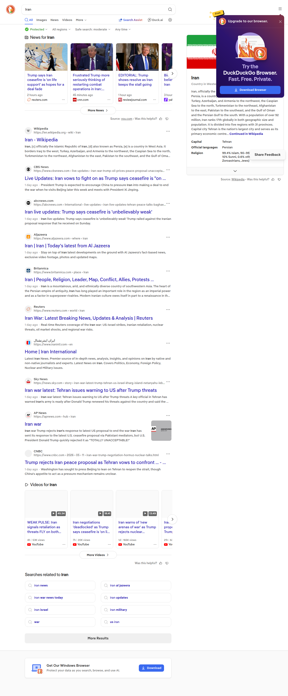

🦆 نتایج جستجو در DuckDuckGo
عبارت جستجو:
Iran
نوع:
همه موارد
10 نتیجه
SafeSearch:
غیرفعال (Off)
تاریخ:
۱۴۰۵/۲/۲۲, ۵:۳۰:۴۹

📋 لینکهای پیدا شده
🔗 https://en.wikipedia.org/wiki/Iran
🔗 https://www.cbsnews.com/live-updates/iran-war-trump-oil-prices-peace-proposal-unacceptable/
🔗 https://abcnews.com/International/live-updates/iran-live-updates-tehran-peace-talks-baghaei/?id=132837701
🔗 https://www.aljazeera.com/where/iran/
🔗 https://www.britannica.com/place/Iran
🔗 https://www.reuters.com/world/iran/
🔗 https://www.iranintl.com/en
🔗 https://news.sky.com/story/iran-war-latest-trump-tehran-us-israel-kharg-island-netanyahu-lebanon-strikes-drone-live-sky-news-13509565
🔗 https://apnews.com/hub/iran
🔗 https://www.cnbc.com/2026/05/11/iran-war-trump-negotiation-hormuz-nuclear-talks.html